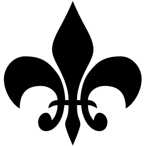

офф документация по созданию туториалов - {@link http://usejsdoc.org/about-tutorials.html}
Создайте два файла в директори туториалов соответствующего раздела
1. - html файл, к примеру cool-tut.html.
В html файле описать свой туториал используя чистую html разметку, без основных элементов html, head, body
2. - создать json файл (если не существует) и вписать системный ключ имени файл, должен совпадать с физическим именем html файла
{
"cool-tut": {
"title": "Мой крутой туториал"
},
"new-cool-tut": {
"title": "Еще один классный туториал"
}
}
Внутрення линковка достпуна только в пределах своего раздела. Для линковки с раздела в раздел - используйте markdown тег ссылки в описании документируемого блока с относительными путями
для быстрого создания можно использовать строчный jsdoc тег, как при документировании комментариями, так и внутри html разметки - {@link http://usejsdoc.org/tags-inline-link.html}
Читай - {@link http://usejsdoc.org/tags-tutorial.html} и {@link http://usejsdoc.org/tags-inline-tutorial.html}
Для внутренней линковки туториалов используются физические имена файлов. Для линковки с документируемым файлом - используй имя его определения, к примеру module:tasks/sass
Пример ссылки на тоториал при документации блока кода - {@link http://usejsdoc.org/about-tutorials.html#-tutorial-block-tag}
/**
* Class representing a socket connection.
*
* @class
* @tutorial cool-tut
*/
function Socket() {}
Пример инлайновой ссылки на тоториал в описании при документации блока кода - {@link http://usejsdoc.org/about-tutorials.html#-tutorial-inline-tag}
В примере специально используеться пробел после открывающей фигурной скобки { @tutorial ..., для демонстрации,
для реализации его нужно удалить {@tutorial ...
/**
* Class representing a socket connection. See { @tutorial cool-tut}
* for an overview.
*
* @class
*/
function Socket() {}
Пример инлайновой ссылки с одного туториала на другой тоториал
<h3 id="gulp-docs:gulp">gulp docs:gulp</h3>
<p>Задача для создания документации всех js файлы, которые участвуют в сборке проекта, а также составления сопутствующих туториалов.</p>
<p>Более подробно - читай туториал { @tutorial cool-tut}</p>
При документировании sass файлов - внутренние физические имена туториалов не доступны.
Для линковки используйте markdown тег ссылки в описании документируемого блока с относительными путями
/// Глобальное семейство шрифта. Более подробно читай в туториале [_tutorial-example](./tutorial--_tutorial-example.html)
/// @type Map | Keyword
$globalFontFamily: sans-serif;
Для подсветки синтаксиса используется плагин {@link http://prismjs.com/|prismjs}. Как читать с плагином читай на офф сайте.
В плагин включены все доступные языки {@link http://prismjs.com/download.html#components}.
Подключенные аддоны плагина:
В тутоарилах вы можете использовать документируемый вами код, как целого файла так отдельных блоков.
Как это реализовать - читай {@tutorial workwith-gulp-jsdoc3} - теги @sourcefile и @sourcecode
Данные опции НЕ доступны в разделах документации html и sass
В каждой директории туториалов есть папка assets/. Все файлы с этой директории будут переброшены в сответствующую папку доки, с сохранением относительных путей. Можно использовать эту директорию для хранения и использования изображений
<p class="_align-center">
<img src="./assets/no-avatar.png" alt="">
</p>

Для изображений с альфа-каналом можно использовать доп класс
<p class="_align-center">
<img class="alpha" src="./assets/alpha.png" alt="">
</p>

Для создания дочерних туториалов - нужны только отдельные html файлы, без json'ов. Для создание связей и заголовков - нужно это все указать в json файле родительского туториала
{
"cool-tut": {
"title": "Мой крутой туториал",
"children": {
"childNameA": {
"title": "Child A"
},
"childNameB": {
"title": "Child B"
}
}
},
"new-cool-tut": {
"title": "Еще один классный туториал"
}
}
Ссылки на дочерние туториалы будут видны только в теле родительского, в начале описания. В общем списке туториалов их нее будет